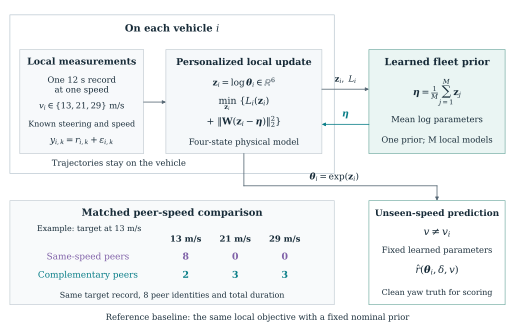

Figures for the personalized identification discussion
This package presents the completed limited-speed physical-OE experiments. It does not modify the manuscript, historical figures, fitting code or frozen results. The paper discussion document is the next step after reviewing these figures.
Editable method overview
Open/download the new draw.io source. Native grouped shapes, connected arrows, editable text and MathJax equations; Times New Roman, mostly 17–20 drawing units, approximately 8.4–9.9 pt at a 7.16-inch figure width.

The image is a vector layout preview generated from the same geometry using Matplotlib mathtext. It is not a native draw.io PDF export; final MathJax/Times New Roman typesetting should be checked when exporting from draw.io. Mathematical Typesetting is enabled in the diagram. Each logical block is grouped for editing. The old LPV overview is preserved.
Notation: M=9 vehicles per fitted condition; θi contains the six positive parameters [Cf/m, Cr/m, m/Iz, μ, σf, σr]. The model states are [β,r,Fyf/m,Fyr/m]. Only noisy yaw y and known steering/speed enter identification. The normalized yaw residual sum of squares is Li; zi=log θi uses the fixed numerical unit convention of the implementation. W=diag(10,10,10,0,4,4); friction has no prior penalty. The server averages log parameters and also receives scalar losses for objective/convergence accounting. No trajectory is exchanged. This is the existing single-machine emulation of data-local computation, not a deployed network or privacy guarantee.
The shared prior is a quadratic regularizer, without a claim of calibrated Bayesian uncertainty. The fixed-nominal-prior baseline uses the same weights but a fixed center. All models stay personalized. The lower coverage panel is an example for a 13 m/s target: the target's own record is excluded from the eight peer counts. Other target speeds use the corresponding permutation. The total is nine records, or 108 s, in either fitted condition.
Result panels and scientific roles
Each of the ten panels is a separate 3.48-inch-wide PDF, SVG and PNG. Fonts are 8 pt, ticks 7 pt; PDF fonts are embedded. No embedded panel letters, figure titles, insets, or confidence bands. LaTeX supplies subcaptions later. Colors are consistent across plots, and line styles distinguish trajectory methods without color. The two yaw panels share axis limits, as do the two error panels.
Primary metric: mean clean yaw prediction RMSE at the two target-unseen speeds among 13/21/29 m/s, using two probes. Each fleet has nine vehicles and 36 primary test cases; the complete primary comparison has 27 vehicles and 108 cases. Fleet means and pooled means have equal vehicle/fleet weighting because the design is balanced. Relative reduction is 100×(1−mean Complementary/mean SameSpeed), not a mean of per-case percentages. Positive differences favor complementary peers. Three reused development fleets are shown explicitly; no inferential confidence interval is implied.
Trajectory selection is fixed in paper/personalized_id_figures.json: training speeds 13 and 21 m/s, existing evaluation speed 29 m/s, broadband probe. In each nine-vehicle stratum select the case nearest the median nominal-prior clean yaw RMSE, with ties ordered by seed/client. No FL outcome enters selection. The rule is descriptive and was specified after the experiments; it is not a preregistered scientific test. Selection tables expose every candidate.
Generate locally — Windows CMD
git pull --ff-only origin main
python paper\prepare_personalized_id_figures.py --preflight
python paper\prepare_personalized_id_figures.py --generate
start report\personalized_id_figures.html
Uses the existing federated_lpv conda environment. No new package or manual thread environment commands are required. Summary panels use saved results; the two trajectory examples replay saved models on existing tests. There is no fitting, controller design, new maneuver, or parameter tuning. Both replays must reproduce saved yaw, noisy-yaw and sideslip metrics within rtol=10−8, atol=10−10. The manifest distinguishes numerical replay from byte-exact recovery. No original raw arrays are required or overwritten.
The self-contained HTML gallery embeds all ten SVG panels and their captions. It can be opened without internet access. The manifest records source hashes, selected cases, replay checks, rendering settings and output hashes.
git add results/figures/paper_personalized_id_*_panel.pdf results/tables/paper_personalized_id_*.csv results/tables/paper_personalized_id_manifest.json report/personalized_id_figures.html
git diff --cached --stat
git commit -m "Generate personalized identification paper panels"
git push origin main
SVG/PNG previews in results/figures are intentionally ignored by git; vector PDFs, summary/selection tables, manifest and the embedded HTML gallery are committed.
Editing and exporting the overview
start paper\figures\personalized_id\personalized_id_overview.drawio
Export a cropped vector PDF from draw.io after reviewing math and text. Suggested destination: results/figures/paper_personalized_id_overview.pdf. Commit that PDF and any edited draw.io source. Do not rebuild the source after manual edits unless you intend to replace those edits.
git add paper/figures/personalized_id/personalized_id_overview.drawio results/figures/paper_personalized_id_overview.pdf
git commit -m "Export personalized identification overview"
git push origin main
Optional regeneration of the original diagram design into a separate directory:
python paper\build_personalized_id_overview.py --output-dir paper\build\personalized_id_overview
This creates the editable XML plus layout-preview PDF/SVG/PNG. The preview uses the same elements but should not be described as a native draw.io export.